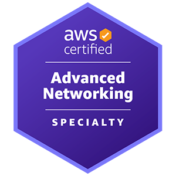
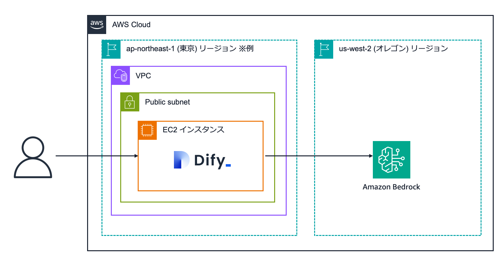

## イシューからはじめる Amazon Q Developer ニシタニ🌀うずコワーク勉強会 --- ## 自己紹介 #### 株式会社メディス ニシタニ@keinstn - 職業 : Web / DevOps エンジニア - 仕事 : 医療系システムの開発・保守 - 趣味 : コーヒー☕ - AWS 資格 : SAA, SAP, DOP, ANS, MLS, SCS </br> <img src="./assets/AWS-Certified-Solutions-Architect-Associate_badge.png" alt="AWS SAA" width="120px" /> <img src="./assets/AWS-Certified-Solutions-Architect-Professional_badge.png" alt="AWS SAP" width="120px" /> <img src="./assets/AWS-Certified-DevOps-Engineer-Professional_badge.png" alt="AWS DOP" width="120px" />  <img src="./assets/AWS-Certified-Machine-Learning-Specialty_badge.png" alt="AWS MLS" width="120px" /> <img src="./assets/AWS-Certified-Security-Specialty_badge.png" alt="AWS SCS" width="120px" /> --- ## Amazon Q Developer AWS が提供するAI コーディングアシスタント --- ## Amazon Q Developer - 2023/11 に発表、2024/04 に一般公開されたサービス - 一般的なコーディングアシスト(コードの生成や修正)を行うことができる - <font class="emphasis">AWS の各種サービスと連携してインフラ構築や運用の自動化などが可能🚀</font> --- ## デモを中心にご紹介 --- ### デモ環境 ##### [Dify での生成 AI アプリケーション構築ワークショップ](https://catalog.us-east-1.prod.workshops.aws/workshops/95a3c231-2064-4a33-9a3d-624b7c11aaa6/ja-JP)  --- ### AIコーディングアシストの機能 | 機能 | 説明 | |:--|:--| | コード生成 | コードを生成する | | レビュー | コードをレビューする | | チャット | チャットで質問する | | エージェント | 指示を実行する | --- ## Amazon Q Developer Usage - GitHub (2025/05/05 in preview) - IDE - CLI --- ## [GitHub App](https://aws.amazon.com/jp/blogs/news/amazon-q-developer-in-github-now-in-preview-with-code-generation-review-and-legacy-transformation-capabilities/) | 機能 | 説明 | |:--|:--| | エージェント | issue からコードを生成してプルリクエストを作成する | | レビュー | プルリクエストのコードレビューを行う | --- ### デモ環境(再掲) ##### [Dify での生成 AI アプリケーション構築ワークショップ](https://catalog.us-east-1.prod.workshops.aws/workshops/95a3c231-2064-4a33-9a3d-624b7c11aaa6/ja-JP) --- ## IDE | 機能 | 説明 | |:--|:--| | コード生成 | コードを生成・補完・修正する | | レビュー | コードをレビューする | | チャット | チャットで質問する | | エージェント | 対話的にコード生成を行う | --- ## 対応 IDE - VSCode - JetBrains - Visual Studio - Eclipse (in preview) #### <font class="emphasis"> NOTE: AWS Skill Builder アカウントが必要 </font> --- ## CLI | 機能 | 説明 | |:--|:--| | チャット | チャットで質問する | | コード生成 | コードを生成・補完・修正する | | エージェント | 対話的に AWS の操作を行う | --- ### デモ環境(再掲) ##### [Dify での生成 AI アプリケーション構築ワークショップ](https://catalog.us-east-1.prod.workshops.aws/workshops/95a3c231-2064-4a33-9a3d-624b7c11aaa6/ja-JP) --- ### CLI の対応OS - Linux - Mac - Windows (WSL) #### <font class="emphasis"> NOTE: AWS Skill Builder アカウントが必要 </font> --- ### 無料版 Amazon Q Developer の使い方 | 種類 | 使い方 | AWS Skill Builder | 利用制限 | |:--|:--|:--|:--| | GitHub | GitHub App | <font class="emphasis">不要</font> | 回数制限 | | IDE | プラグイン | 必要 | 回数制限 | | CLI | Linux / Mac | 必要 | 回数制限 | --- ### Amazon Q Developer は ### イシューからはじめよ --- ### ご清聴 ### ありがとうございました ## 🌀🌀